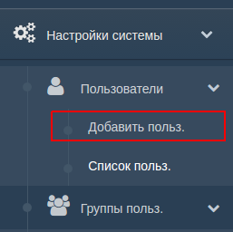
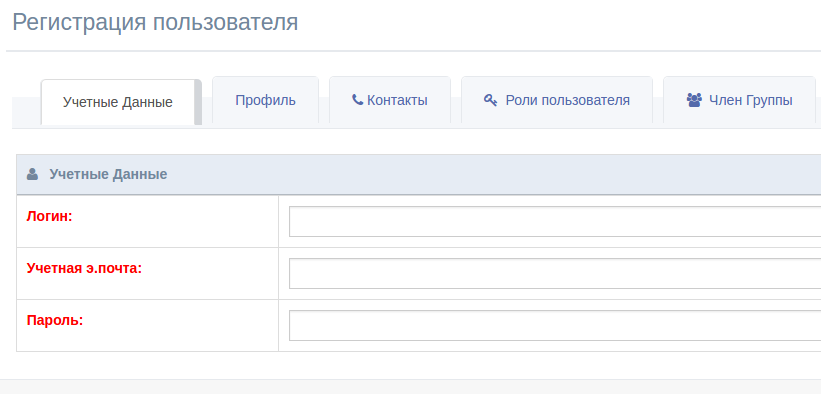
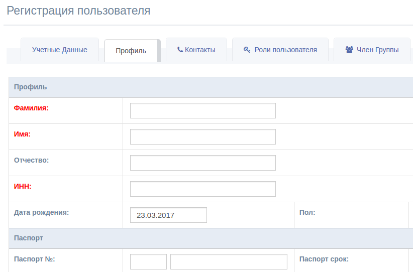
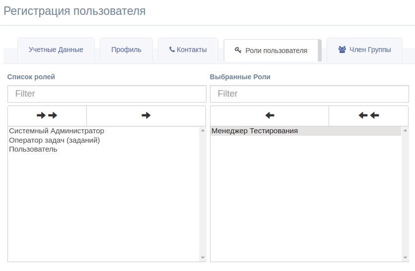
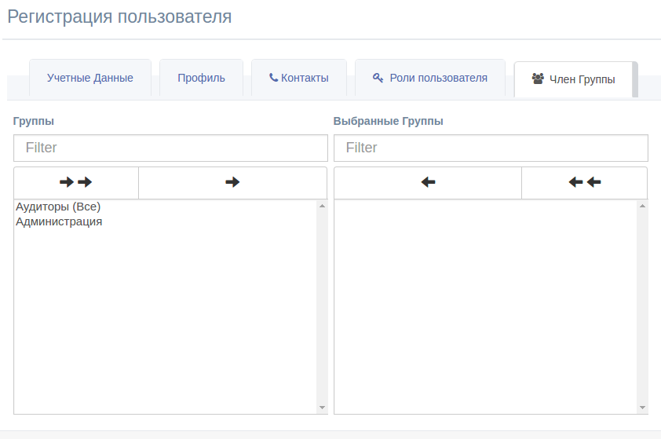

1. Создание Пользователей
Для создания Пользователя вам необходимо создать Роли и
Организации.
Пройдите по нижеуказанной ссылке (Меню --> Настройки Системы
--> Пользователи --> Добавить Польз.):

Заполните все необходимые поля в красном.
а. Учетные данные
Укажите пароль, логин (не менее 5 букв) и электронную почту.
Электронная почта необходимо для функционала востановления пароля. В
данной версии Ats1 этот функционал отключен.

б. Профиль
Заполните информацию о пользователе (Контакты, Паспорные данные,
Обучение , организация(место работы, должность))

в. Роли
Выберите из списка Роли , которые вы хотите назначить
пользователю.

г. Группы
Выберите группу (группы) в которую вы хотите добавить
пользователя

Вся информация пользователя, включая ролей и групп можно
отредактировать в разделе "Редактировать Пользователя".